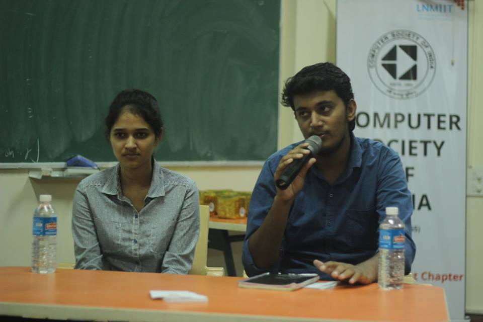

Townhall 2016
The opening event of the CSI
Council was a great success
with huge number of crowd
attending the event and
participating enthusiastically in
the informal session with the
mind boggling seniors. The
curiosity was addressed and
students felt motivated.
The event commenced its way through a short session of questions put upto Divya
Biyani (Y13) and Saloni Goyal (Y13). They had a wide list of academic achievements.
Divya boss emphasized on a good
kick start of anything would itself
provide immense confidence to
keep a person going smoothly
whereas Saloni boss stated that a
well maintained routine and
cleared set of concepts will
always get one to perform well.
They elaborated how their
interns were an eye-opening
moment for them and how they
are going to miss the college life, which are the best days one could ever have.
Following them the great
inexplicable mind with all-rounder
capabilities, Kuldeep Grewal (Y13)
was called up on stage. He
described how he has an
unbreakable attachment to both
basketball and coding and they
indeed form core part of his life. He
had contributed in several open
source projects. Several fun-
elements were also put in, by asking
him out of zone questions. He stated himself as a paragon that college has to be
endured with developing skills, may it be of any aspect.
The ex-chairperson, a contemporary poet, Pushkal Agarwal (Y13) was invited on stage.
His words gave a perfect description of
his leadership qualities and intelligence.
Students enjoyed his school time dance
video which was also shown during the
session. He set forward an example of
how one has to maintain a strong bond
with the faculty in order to achieve and
explore new things around. He gave an
inspiration to think out of box.

Sagar Chand Agarwal (Y13) had
an unending list of
achievements. He had been
showcasing astounding
capabilities ever since his college
tenure had begun. He
elaborated his journey through
Google Summer of Code and
further elaborated his way
through Google intern. He
described how life isn’t an easy
path and difficult challenges faced by him during this entire time. References andcollaboration was what kept him going and let him reach the level he is at present. He
got nostalgic during this talk and said that nothing’s ever some mirabilia. He described
how supporting the faculty had been when he needed help.
With a token of respect
and love, the mementos
were handed over to
each of them. They
finally said that let this
journey continue and
reach great heights and
ended with a joyful
mood. Townhall made
an ignition start in each
mind which desires to
achieve the great in
their lives.
